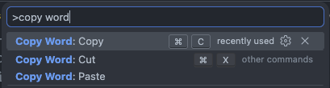

Broader reach, more control
This release extends multi-cursor support and brings the extension to the browser, while opening up more languages and paste customization.
Visual Studio Code Extension
Copy Word in Cursor provides custom Cut, Copy, and Paste
commands, and uses the current word as the default selection.

What's new in 3.13
This release extends multi-cursor support and brings the extension to the browser, while opening up more languages and paste customization.
Features
Cut, Copy, and Paste act on the current word whenever there is no text selection.
02Wire the commands to your usual Ctrl/Cmd+C, X, and V shortcuts in a few steps.
03Choose how pasted text replaces the word at the cursor position.
04Works across every cursor at once, on desktop and in the browser.
Word-aware commands
Copy Word in Cursor adds three commands that behave like their native counterparts when text is selected, but automatically target the current word when it is not.
Cuts the current word when there is no selection, just like a normal cut when there is.
Copies the current word to the clipboard without requiring you to select it first.
Pastes clipboard content over the current word, according to your configured paste behavior.

Keyboard shortcuts
Go to File / Preferences / Keyboard Shortcuts and add entries binding
Ctrl/Cmd+C, Ctrl/Cmd+X, and Ctrl/Cmd+V to the extension
commands whenever the editor has focus.
copy-word.copy — copy the current wordcopy-word.cut — cut the current wordcopy-word.paste — paste over the current wordBind each entry with "when": "editorTextFocus" so the shortcuts only apply while editing.
{
"key": "Cmd+c",
"command": "copy-word.copy",
"when": "editorTextFocus"
},
{
"key": "Cmd+x",
"command": "copy-word.cut",
"when": "editorTextFocus"
},
{
"key": "Cmd+v",
"command": "copy-word.paste",
"when": "editorTextFocus"
}Configurable paste
copyWord.useOriginalCopyBehavior settingfalse by defaultFAQ
The commands behave just like the native Cut, Copy, and Paste when there is an active selection. The current-word behavior only kicks in when there is no selection at all.
Open File / Preferences / Keyboard Shortcuts and add entries binding Ctrl/Cmd+C, Ctrl/Cmd+X, and Ctrl/Cmd+V to copy-word.copy, copy-word.cut, and copy-word.paste with "when": "editorTextFocus".
Yes. Use the copyWord.pasteWordBehavior setting to choose between original, replaceWordAtCursor, or replaceWordAtCursorWhenInTheMiddleOfTheWord.
Yes. Enable copyWord.useOriginalCopyBehavior to fall back to the native Cut/Copy behavior when no text is selected and no current word is defined.
Yes. Copy Word in Cursor supports multi-cursor editing and runs in web-based VS Code environments in addition to the desktop version.
Yes! It works on all VS Code forks, ensuring compatibility and seamless integration with your favorite tools.
If you have a feature request, bug report, or suggestion, please submit it through our GitHub Issues page. We appreciate your feedback!
If you have a question that's not covered in the FAQ, feel free to reach out through our support channels at GitHub Discussions. We're here to help!
Donate
Copy Word in Cursor is open source, and your support helps keep maintenance, improvements, and ecosystem compatibility moving forward.